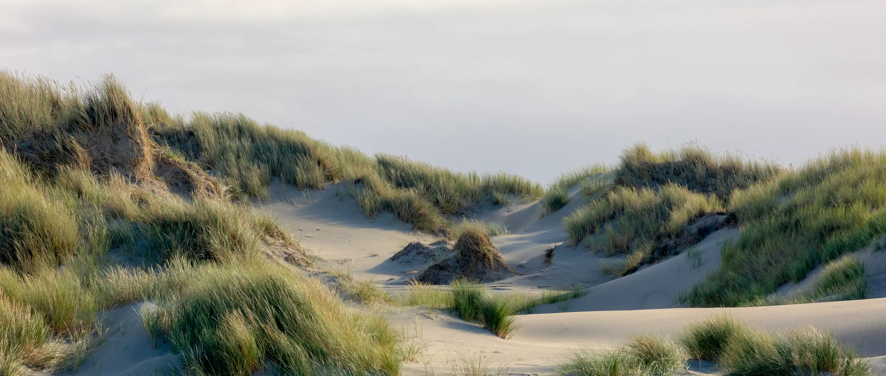
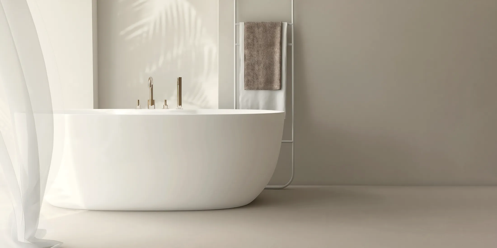
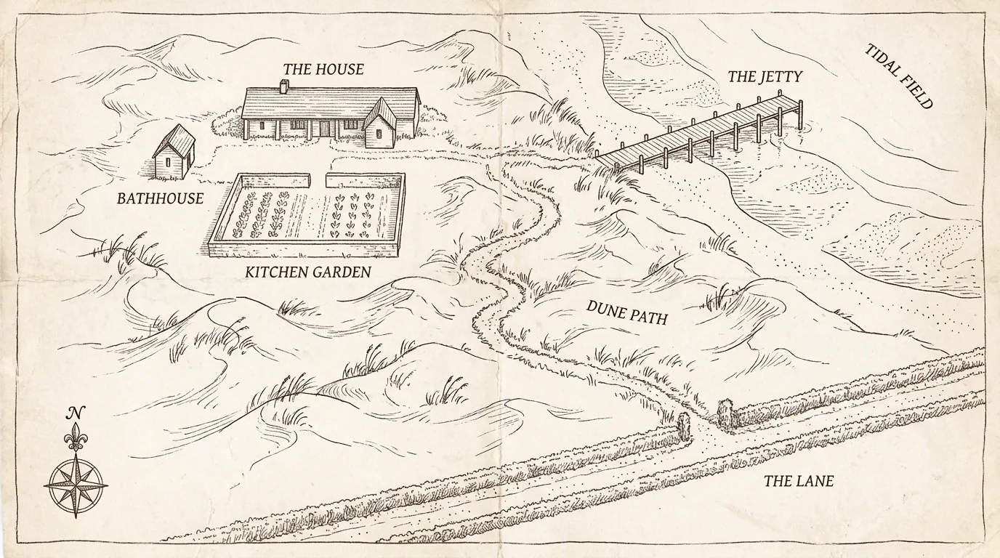

Six rooms · A kitchen · A bathhouse
The sea keeps its own hours. So do we.
Saltfield is a long, low house between the lane and the tide. Bread goes in the oven before first light, the bathhouse steams across the garden, and the dunes begin where the gate ends.

The house
Built for weather,
kept for guests.
A farmhouse first, then a keeper's lodging, and for the last thirty years a place people come back to. Six rooms upstairs and down, no two alike, none with a television and all with somewhere good to read.
The door is on the latch from seven. There is no front desk — there is the kitchen, and whoever is in it will be pleased to see you.
The six roomsThree to start with
Every room is priced by season, two nights or more. The full six are on the rooms page.

The kitchen
Breakfast until eleven.
Supper at one table.
The kitchen bakes before first light and cooks what the coast and the garden give it. Breakfast is unhurried and included; supper is one long table, one sitting, most nights of the week.
Days & the long table
The ground
Hand-drawn because the surveyor never came back. Distances are honest; the heron is usually there.


Field notes
What the house
writes down.
Tide times worth keeping, what the garden is giving the kitchen, where the seals hauled out last week. A few notes a season, kept since the nineties.
Read the notes